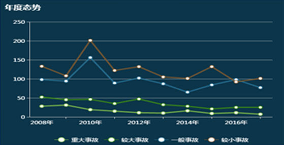
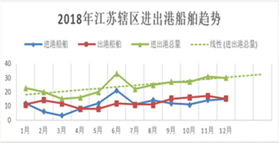

数据展示
船舶
247万艘次累计进出港船舶
11524艘次进江海轮数量
2487艘次危险品船舶数量
948艘次国际航行船舶数量
9845艘次穿越航道数量
3000艘次最大断面流量
货物
- 231.1万吨
- 进出港船舶
货运总量
- 47.12万吨
- 危险货物
运输量
- 22.36万吨
- 散装化学品
运输量
- 2.82万吨
- 集装箱
货物数量
旅客
- 12.33万人
日渡运旅客数量 - 47.12万人
累计渡运旅客数量
管辖范围
- 南通
-
238公里海岸线
1万平方海里海域面积
- 江苏
-
365公里主航道
185公里汉江和捷水道
- 宜兴
宿迁等
辖区概况
危险货物
年运输量1.72亿吨
散装化学
品运输量796万吨
-
80%
- 长江沿线年运输量
-
26.4%
居全国首位
- 全国运输量
- 港
-
17个开放口岸
7个亿吨大港
- 泊
-
1554个生产性泊位
641个万吨级以上
262个液体散化
- 化
-
700+个化工企业
117个化工码头
- 救
-
6个救助综合基地
46个应急待命点
- 应急搜救
-
7701人 成功救助
遇险船舶1032只 成功救助
遇险人员96.2% 人命救助
成功率
- 水上安全形势
-
35.71% 等级事故
18起11.76% 死亡失踪
30人38.89% 沉船
11艘28.05% 直接经济损失
4847万元

江苏辖区2019年度实时数据（截止：2019-01-25 16:26:38）
进出港船舶 6712 艘次
进出港船舶货运量 261 万吨
今日渡运旅客数量 12.33 万人
宿迁
南京
扬州
镇江
泰州
常州
江阴
张家港
常熟
南通
太仓
【
港口货物吞吐量：17.1亿吨
体系内船舶：1486艘
航运公司：169家
船员队伍：21.13万人
】- 辖区水域安全态势
- 
- 辖区内船舶分布热力图
- 进出港船舶趋势分析
- 

- AIS
- VTS
- 航E行
- 沿江
4G - 沿海
GIS - 应急
指挥 - 渔业
北斗 - 部局
AIS - 长江局
信息平
台
南京至扬州段
- 天气
 多云转阴
多云转阴
- 温度
 6℃~15℃
6℃~15℃
- 风力
 东北风3级
东北风3级
- 雷电
 无
无
- 雾
 无
无
- 能见度
 11Km
11Km
- 潮汐
 无
无
- 水温
 10℃
10℃
- 浪高
 3m
3m
- 南京
- 3.2亿吨
- 泰州
- 2.4亿吨
- 江阴
- 2.8亿吨
- 张家港
- 2.6亿吨
- 南通
- 3亿吨
- 太仓
- 2.1亿吨